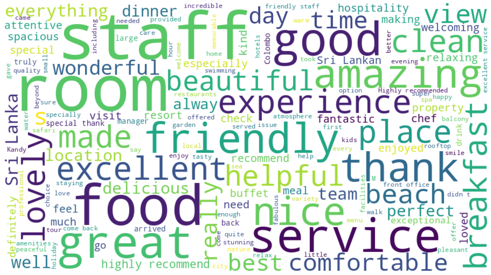
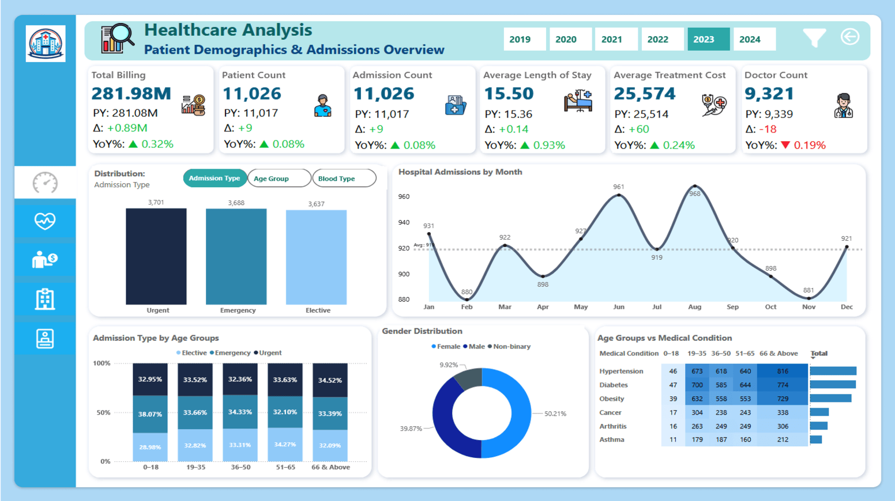
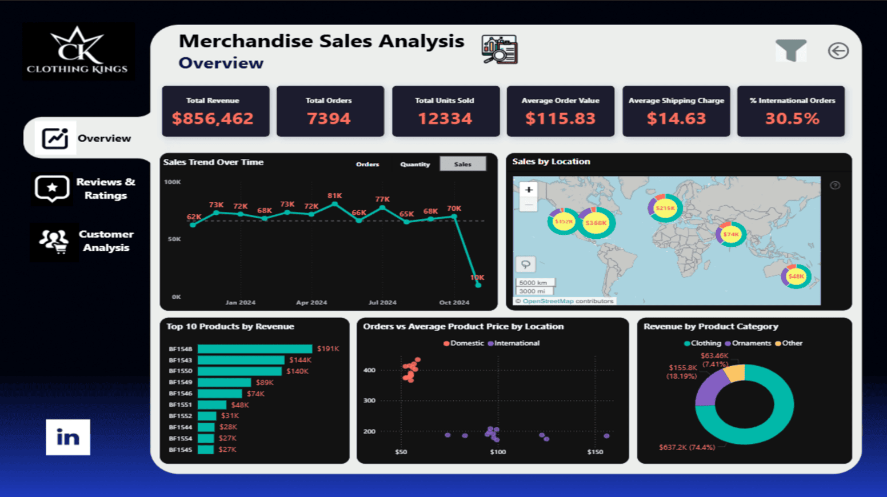
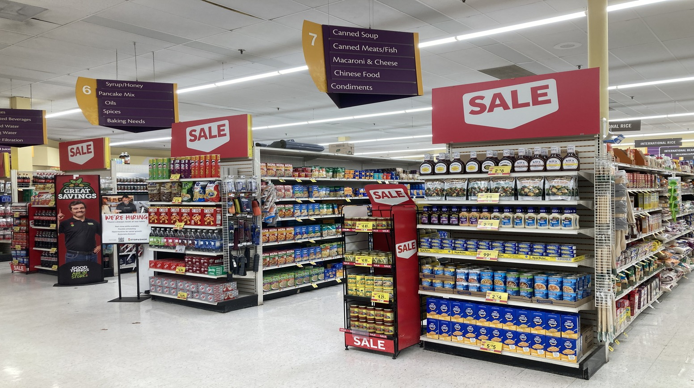
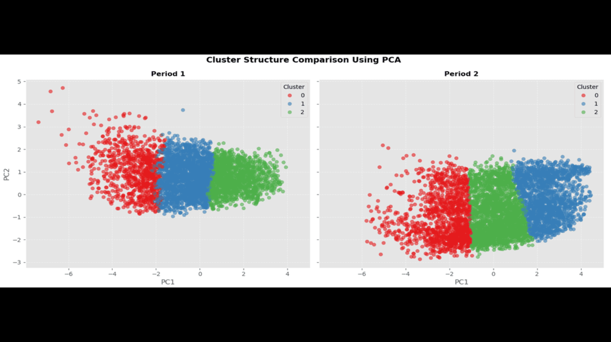
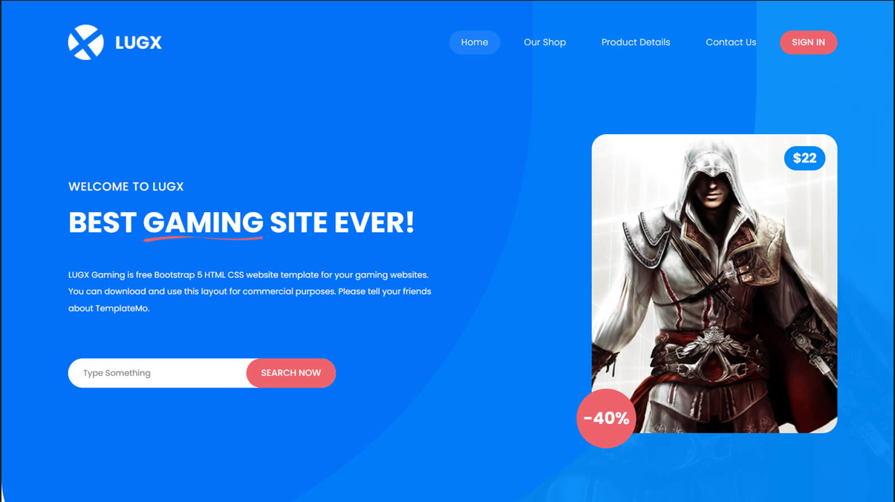

Portfolio
A curated showcase of analytical projects and data stories.

Hotel Customer Feedback & Sentiment Intelligence
Scraped and analyzed 5,960 TripAdvisor reviews across 116 Sri Lankan hotels, fine-tuning BERT to detect dissatisfaction hidden in a 97%-positive dataset and uncovering aspect-level service insights that could help hotels improve the guest experience.
View case study →
Pizza Sales & Revenue Intelligence
Built a SQL Server data warehouse for a pizza business, bringing together pizza sales, inventory, recipe, and staff data, with SQL analysis feeding Power BI dashboards for business reporting.
View case study →
Healthcare Performance & Operations Analysis
Built a multi-page Power BI dashboard analyzing 55,500 patient records across 10 U.S. hospitals, covering demographics, medical conditions, length of stay, treatment costs, and hospital performance.
View case study →
Merchandise Sales & Customer Analysis
Built a multi-page Power BI dashboard analyzing merchandise sales performance for a product line covering sales trends, product performance, geographic reach, buyer demographics, and review/rating impact.
View case study →
Sri Lanka Climate Analytics & Agricultural Risk Insights (2010–2024)
Analyzed 14+ years of district-level weather data across Sri Lanka using Hadoop, Hive, and Spark, combining climate trends with evapotranspiration prediction and Tableau visualizations to support agricultural and water-resource planning.
View case study →
Supermarket Demand Forecasting & Inventory Planning
Built a modular machine learning pipeline to forecast next-week sales for top fast-moving product categories (Grocery, Beverages, Chilled) across five supermarket outlets, using historical transactional data.
View case study →SQL Project Portfolio
A collection of standalone SQL projects covering data cleaning, exploratory analysis, and query-driven reporting across real-world datasets. Each project includes structured SQL scripts and documentation, demonstrating query writing, data cleaning techniques, relational schema design, and analytical querying across varied business domains.
View project portfolio →
Diabetic Retinopathy Severity Grading: Custom CNN vs. Transfer Learning
Built and compared two deep learning models to classify diabetic retinopathy severity across five grades using around 35,000 retinal images. Tested EfficientNet-B4 and a custom CNN with SE-attention, then used Grad-CAM, probability calibration, and bias testing to assess how reliable the models were beyond basic accuracy.
View case study →
Urban Air Quality Pattern & Drift Analysis
Analyzed hourly air quality data using K-Means clustering to identify three pollution states and measure how these clusters changed over time using centroid shifts, membership changes, and KL divergence between warm and cold seasons.
View case study →Regional Energy Demand Forecasting & Planning
Built a cloud-based ML forecasting system predicting half-hourly electricity demand across five Australian states, combining two decades of weather and energy data. Trained and compared six ensemble algorithms per region, built a stacked meta-mode, and applied systematic hyperparameter tuning on AWS SageMaker.
View case study →
Cloud-Based Business Operations & Analytics Platform
Deployed a full microservices e-commerce platform on Google Kubernetes Engine with blue-green CI/CD pipeline via GitHub Actions. Built a real-time analytics pipeline with ClickHouse, exported to AWS S3, then connected the data to Power BI to create a live dashboard of user activity and business insights.
View case study →© Chooladeva Piyasiri. All rights reserved.